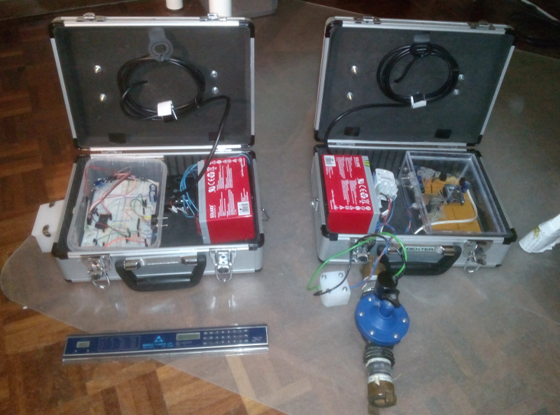
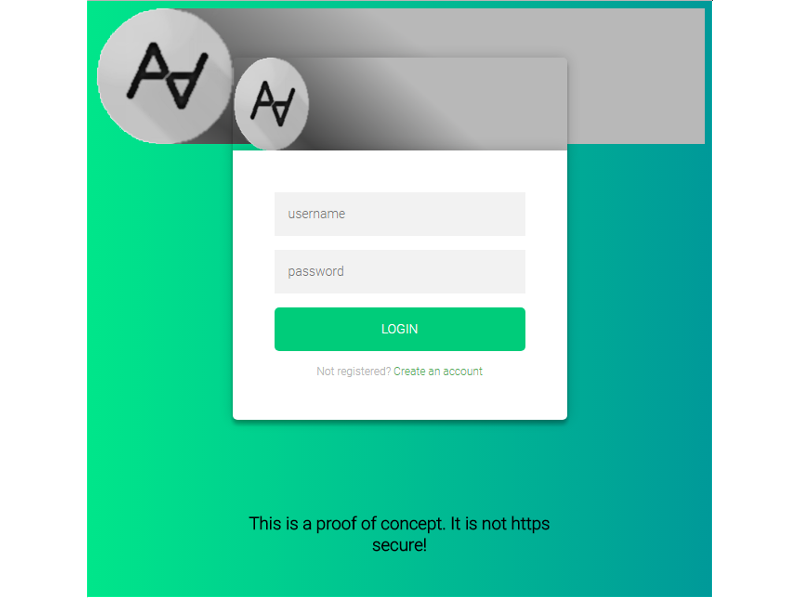
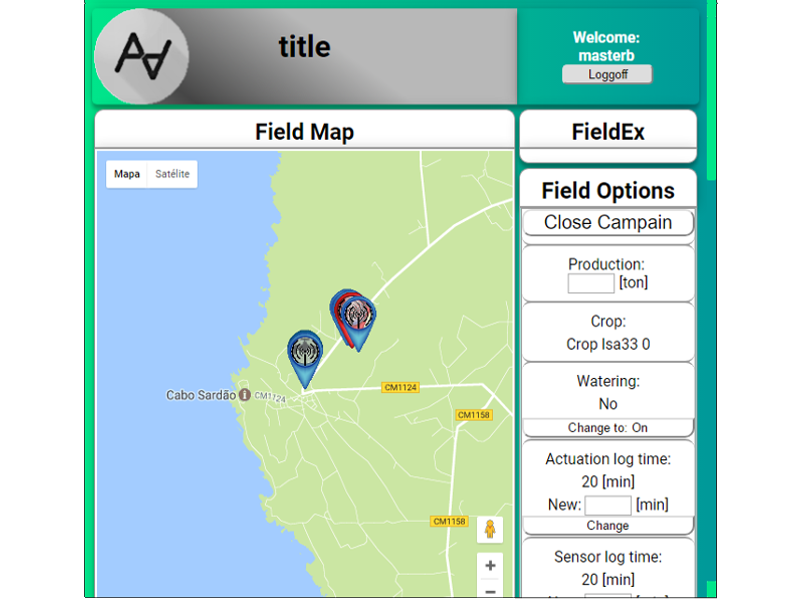
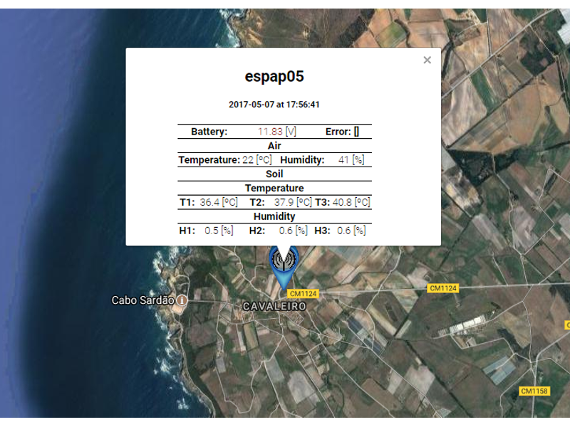

Monitorização e controlo remoto de sistemas de rega agrícola
Tese de Mestrado Integrado em Engenharia Mecânica Universidade de Aveiro

- 

- 
- 
- 
Por outro lado as soluções convencionais exigem muita mão de obra, ou necessitam de fontes energéticas externas, sejam elas combustíveis fósseis ou energia, elétrica da rede de distribuição, ou a troca periódica de pilhas. Estes fatores aumentam os custos com manutenção, criam entraves à utilização dos terrenos cultivados que podem mesmo deixar de ser viáveis.
Este trabalho documenta o desenvolvimento de um sistema de monitoriza ção e controlo de rega, com capacidade para fornecer informação sobre os valores de temperatura e humidade do solo e do ar, ser portátil, de fácil instalação, auto-suficiente energeticamente e capaz de atuar válvulas de rega remotamente. Para alcançar este objetivo foram criados módulos que utilizam um NodeMCU como microcontrolador e comunicam através de Wi-Fi. Estes módulos recarregam as baterias com recurso a painéis solares, e são as unidades remotas do sistema. Para gerir o sistema foi criada uma aplicação que através da internet recebe os dados recolhidos nos terrenos e envia comandos para o início e fim dos ciclos de rega. Por fim foi desenvolvida uma interface para o utilizador que é servida através de um browser via página web para que seja possível interagir com o sistema em qualquer dispositivo, fixo ou móvel, que tenha acesso à internet.
O projeto exigiu o desenvolvimento de uma interface HTML / JS, back-end e servidor e, finalmente, a eletrónica capaz de falar com o servidor, adquirir dados e atuar sobre as válvulas.
Através da interface, o usuário pode alterar os horários de irrigação e verificar se a temperatura e umidade do solo e do ar estão dentro dos valores necessários para cada cultura.
O servidor atua de forma semelhante a um serviço REST, fornecendo dados como objetos JSON e páginas HTML. Ao mesmo tempo, é responsável por gerir uma base de dados SQLite e os horários de irrigação.
No campo, um circuito personalizado, com base no kit de desenvolvimento NodeMCU, adequir valores dos sensores e está encarregue da comunicação (por http) com o servidor.